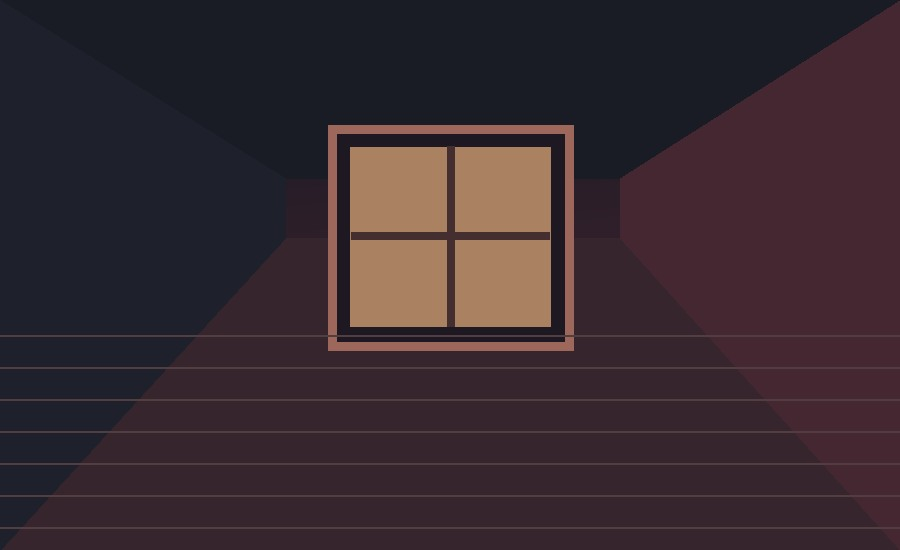

Что делает триллер психологическим?
ОсобенностиПриёмыОтличие от детектива
Особенности жанра
Психологический триллер держит зрителя в напряжении из-за мыслей, страхов и поступков персонажей. Иногда неизвестно, насколько правильно главный герой воспринимает события.
- Тайна, которая раскрывается постепенно.
- Сложные мотивы и психологические конфликты.
- Неожиданные изменения представления о сюжете.

Тёмное помещение создаёт чувство неизвестности.
Какие приёмы создают напряжение?
- Работа с сюжетом
- Неожиданный поворот.
- Ненадёжный рассказчик.
- Постепенное раскрытие информации.
- Визуальные решения
- Тёмное освещение.
- Ограниченные пространства.
- Необычные ракурсы.
- Звук
- Напряжённая музыка.
- Паузы и тишина.
Чем триллер отличается от детектива?
Детектив чаще строится вокруг поиска ответа на вопрос «Кто совершил преступление?». Триллер прежде всего стремится создать тревогу и ожидание опасности. Один фильм может сочетать оба жанра.
Дополнительный источник: подборка 100 лучших триллеров от BFI (откроется в новой вкладке).